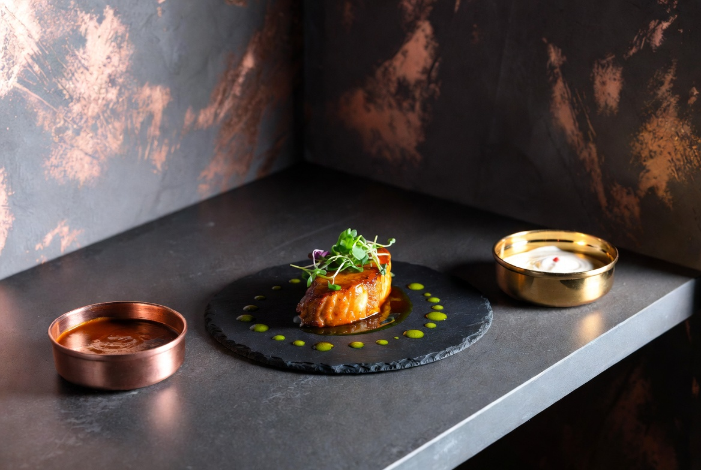

Chef Ana López
· Cocina Molecular ·
Reconocida por transformar ingredientes tradicionales en experiencias sensoriales únicas. Dos estrellas Michelin.
12 · 13 · 14 de Septiembre · 2026
Un festival único — donde la cocina de autor se convierte en arte
Reservar EntradaUpcoming Events — Selecciona tu experiencia
| Hora | Chef | Maridaje de Mesa | Talleres | Tickets |
|---|---|---|---|---|
| 14:00 | Chef Ana López | Maridaje de Arroces | Cocina molecular | Comprar |
| 15:00 | Chef Ana López | Maridaje de Vinos | Fermentados artesanales | Comprar |
| 16:00 | Chef Raúl Medina | Maridaje de Texturas | Alta pastelería | Comprar |
| 17:00 | Chef Sofía Herrera | Maridaje de Especias | Destilados artesanales | Comprar |
| 19:00 | Chef Raúl Medina | Cata de Cierre | Fusión latinoamericana | Comprar |
Maestros de la cocina de autor
· Cocina Molecular ·
Reconocida por transformar ingredientes tradicionales en experiencias sensoriales únicas. Dos estrellas Michelin.
· Fusión Latinoamericana ·
Embajador de los sabores del continente, con técnica francesa y alma criolla. Premio Iberoamérica 2024.
· Alta Pastelería ·
Pionera en postres de diseño arquitectónico. Su obra combina geometría y sabor en cada pieza.
Fusión Gourmet nació como una propuesta para celebrar la gastronomía como lenguaje universal. Cada edición reúne a los chefs más innovadores para crear experiencias que van más allá de comer: son vivencias que involucran todos los sentidos.
El festival se desarrolla en un espacio diseñado para que cada rincón cuente una historia culinaria, desde la bienvenida hasta el postre de cierre.
Una muestra de ediciones anteriores



· Las imágenes se cargan desde la carpeta /imagenes/ ·